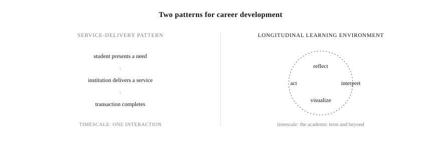
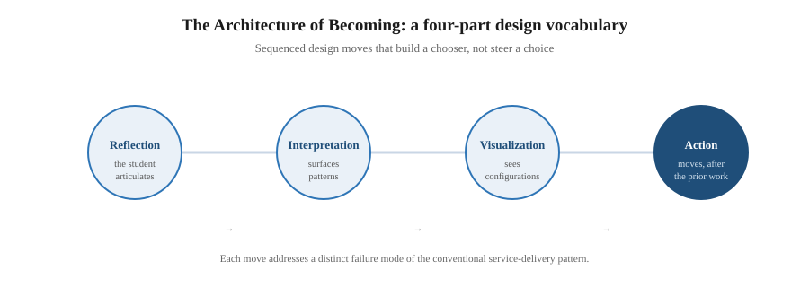
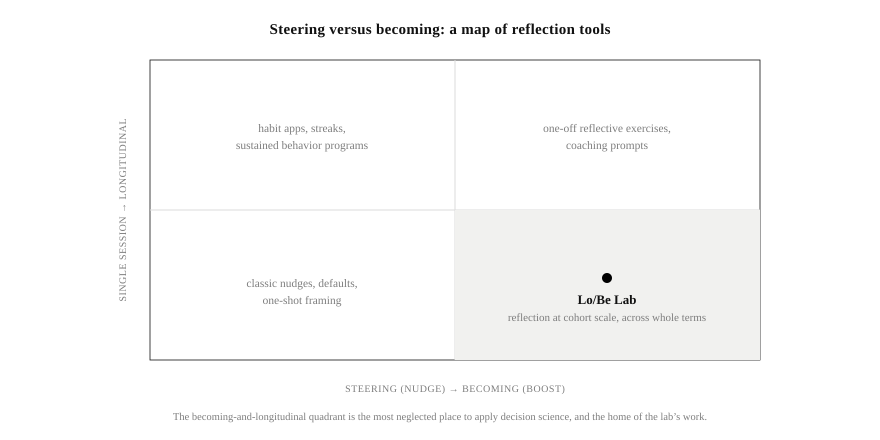

A Four-Part Framework for Designing Career Development Systems as Longitudinal Learning Environments
Lo/Be Lab
About this working paper Author-produced. Frames the
lab’s broader research program; the five prior prototype reports
(2026-01 through 2026-05) test the framework via specific prototypes.
Comments, citation requests, and counter-evidence welcome at
seth.looper@gmail.com.
Lo/Be Lab · CC
BY-NC 4.0
ORCID: 0009-0002-8683-1632
(https://orcid.org/0009-0002-8683-1632)
A Four-Part Framework for Designing Career Development Systems as Longitudinal Learning Environments
Lo/Be Lab · seth.looper@gmail.com · ORCID 0009-0002-8683-1632
Abstract
Most institutional career platforms are built around the institution’s needs: they prioritize placement metrics and operational efficiency while underbuilding the slower reflective work students themselves need to do. Students move between disconnected tools (resume builders, skill inventories, advising systems, networking platforms), each showing a different version of them, with no way to connect the pieces over time. This paper proposes a four-part framework for redesigning career development as a longitudinal learning environment: reflection (writing through which the student articulates what they know about themselves); interpretation (surfacing patterns in that material without prescribing what they mean); visualization (externalizing thinking so the student can see their own configurations); and action (job search, mentorship, and skill-building deployed after self-knowledge rather than before it). The framework is grounded in research on high-impact practices (Kuh, 2008; Pascarella & Terenzini, 2005), constructionist accounts of vocational behavior (Savickas, 2013; McAdams, 1993), and the design-based research tradition (Brown, 1992; Design-Based Research Collective, 2003). It informed five working prototypes that the author developed across academic terms through September 2026, each documented in a companion working report. I use becoming to name the developmental outcome the framework serves, the gradual formation of a person able to author their own vocational direction, as distinct from deciding, the discrete selection of an option. The paper’s contribution is the framework itself: a named design vocabulary that recasts career development from service delivery to scaffolded learning across the academic term, and links each design move to the developmental work it supports.
Keywords career development · institutional design · longitudinal learning · reflection-first pedagogy · high-impact practices · self-authorship · narrative identity · planned happenstance · design-based research · framework paper
A first-year undergraduate beginning to think about career will, at most universities, encounter a set of institutional tools that share a particular shape. There is an assessment instrument that asks them to answer questions and returns a ranked list of suggested occupations. There is a resume-builder that asks them to fill in fields. There is an advising appointment with a thirty-minute window. There is a job board that asks them to filter by industry and location. There is, eventually, an alumni-network platform that asks them to search by graduation year and major. Each of these tools, considered individually, is competently designed for what it does. Considered together, they constitute the institutional career-services pattern at most U.S. universities.
The pattern shares a defining assumption. It assumes that career development is a service-delivery problem: that the student presents a need, the institution delivers a service against the need, and the transaction completes. The dashboards by which career offices are evaluated reflect this assumption directly: first-destination placement rates, advising sessions delivered, employer events held, alumni connections made. These are reasonable things to measure. They are also the wrong things to measure if what one wants to support is the work students need to do.
That work, on the developmental-psychology evidence reviewed in §2.2, is longer in timescale than any individual service interaction. It is the gradual construction of a sense of who they are, what they want, what work they would find meaningful, and what kind of life they are trying to build. It happens across years. It is shaped by experiences inside and outside the institution. It cannot be delivered as a service and cannot be measured by service-delivery metrics. What it can be supported by is an institutional design that treats it as the longitudinal learning process it is.
This paper proposes a four-part framework for that institutional design. The four parts are reflection, interpretation, visualization, and action, in roughly that sequence. Each is grounded in a specific tradition of theoretical and empirical work, described in §3. The framework is the design vocabulary I have used to guide the development of five working prototypes; each prototype implements the framework in a different register and is documented in a companion working report in the same series.
Each prototype maps onto the lab’s five research questions: DartWorld and the Career Design Lab address RQ 1 (reflection at cohort scale); Synapse, DartWorld, and Narrative by Design address RQ 2 (design principles for spatial and computational tools); the Career Design Lab addresses RQ 3 (whether individual reflection improves group deliberation); Narrative by Design addresses RQ 4 (using AI to surface evidence without prescribing meaning); and Threshold addresses RQ 5 (what is discipline-specific versus universal). The four-part framework is the design vocabulary common to all five.
The paper documents the framework and its theoretical motivation; it does not report empirical outcomes from the framework’s deployment. The prototypes were developed iteratively, the Dartmouth programs among them concluded for the author in September 2026, and no empirical evaluation was conducted. Empirical evaluation is the research agenda the framework’s articulation invites.
The paper proceeds as follows. Section 2 surveys the institutional and theoretical context: the service-delivery pattern as currently dominant, the higher-education research on what predicts longitudinal student development, and the constructionist accounts of vocational identity that inform the framework’s developmental commitments. Section 3 develops the four-part framework, with each part articulated as a design move with specific theoretical grounding. Section 4 surveys the framework’s implementation across the lab’s five working prototypes, with brief reference to the companion working reports that document each in detail. Section 5 discusses what the framework predicts about institutional design, what it does not include, and what empirical work it invites.
This paper makes four contributions. First, it names and defines a developmental target, becoming rather than deciding, that distinguishes the design problem addressed here from the selection problem most career infrastructure is built to solve. Second, it offers a four-part design vocabulary (reflection, interpretation, visualization, action) that links each design move to a specific theoretical tradition and a specific failure mode of the conventional pattern. Third, it demonstrates the vocabulary’s generativity by showing how five working prototypes, developed across multiple academic terms, each instantiate the framework in a different register. Fourth, it specifies the empirical agenda the framework opens, stating for each design move what evidence would confirm or disconfirm its design claim. The paper’s scope is the framework and its motivation; it does not report effectiveness outcomes, and §5.3 is explicit about what therefore remains undemonstrated.
The dominant pattern of institutional career services in U.S. higher education is what I call a “delivery” model: students access services on request, services are delivered against the request, the transaction completes (Figure 1). The model has been applied across many domains of higher-education service provision (advising, tutoring, mental health, career), and it has the virtue of being administratively legible. Each interaction can be counted. Each cost can be allocated.

The pattern was largely consolidated in the post-World War II expansion of higher-education student services, and was institutionalized by accreditation and reporting frameworks that measured the services delivered rather than the developmental change they were supposed to produce. Pascarella and Terenzini (2005), in their synthesis of three decades of higher-education research, document repeatedly that the developmental outcomes higher education is nominally designed to produce (intellectual development, identity formation, civic capacity) are largely uncorrelated with the volume of services students consume. The developmental work happens elsewhere: in residence-hall conversations, in classroom encounters with disorienting ideas, in extended mentoring relationships, in the slow accumulation of experiences that demand the student make sense of them.
Vincent Tinto’s (1993) decades-long research program on student attrition arrived at a parallel conclusion. The strongest predictor of whether a student persists through to graduation is not the service infrastructure available to them but the depth of their academic and social integration into the institution’s community of practice. Students embedded in dense networks of peers and faculty stay; students who experience the institution as a series of disconnected service transactions leave. The implication for career services is direct: a career-development model built on disconnected service transactions is, by structural design, in opposition to the evidence on how students develop.
George Kuh’s (2008) framework of high-impact educational practices provides the most actionable institutional-design literature available. Kuh’s program identified ten specific practices (first-year seminars, common intellectual experiences, learning communities, writing-intensive courses, collaborative assignments, undergraduate research, diversity/global learning, service learning, internships, capstone projects; Kuh, 2008) that, when implemented with adequate quality, produce measurable developmental gains across multiple outcomes. The practices share several features: they require students to invest substantial time and effort over an extended period; they substantially increase interactions with faculty and peers; they expose students to diverse perspectives; they provide frequent feedback; and they require students to apply learning in new settings. These are the features the dominant service-delivery pattern lacks.
The developmental-psychology and vocational-psychology literatures converge on a similar diagnosis from a different direction. Marcia Baxter Magolda’s (2001) longitudinal study of self-authorship, which followed the same students from their undergraduate years into adulthood, documented that the developmental target of higher education (the transition from receiving authority externally to authoring one’s own life) is a years-long process whose milestones rarely correspond to specific institutional interventions. The relevant timescale for the work is longer than any of the service transactions higher education’s administrative infrastructure is set up to deliver.
Dan McAdams’s (1993, 2001) narrative identity theory makes a complementary move. In McAdams’s account, identity is a life story that a person keeps revising as new experience arrives. The implication for career development is that the work it requires is the construction and revision of a particular sub-story (one’s vocational story), and that this work, like all narrative work, happens across time and through repeated engagements with new experience.
Mark Savickas’s (2013) career construction theory operationalizes the narrative-identity insight specifically for career contexts. Savickas’s framework treats career as constructed through narrative, with adaptive capacity as the central developmental target. The framework names four dimensions of adaptive capacity (concern, control, curiosity, confidence) that develop over time through engagement with the work of constructing a career. None of these dimensions is well-supported by a single service interaction. All of them benefit from sustained engagement with a context that treats career-related self-construction as the work.
A fourth frame comes from planned happenstance learning theory (Mitchell, Levin, & Krumboltz, 1999), which sets itself against the matching paradigm behind most twentieth-century career assessment. On this view, matching misframes career choice by treating preferences as fixed in advance and outcomes as predictable; the alternative is to cultivate curiosity, persistence, flexibility, optimism, and risk-taking in the face of chance events. Dispositions of this kind form through practice across many situations, not through a single intervention.
The shared insight across these literatures is that career development, properly understood, is a form of learning in the strong sense Schön (1983), Kolb (1984), and the broader experiential-learning tradition have developed. It is not a selection problem amenable to good information about options; it is a developmental problem amenable to environments designed to support sustained reflective practice. The institutional-design implication is that career services should be designed in the image of high-impact practices (Kuh, 2008) rather than in the image of service-delivery transactions.
The career-services field has not been entirely unaware of this diagnosis. Several institutional responses have attempted to address parts of it. Career-decision-difficulties instruments (Gati, Krausz, & Osipow, 1996) operationalize the observation that students arrive at career deliberation with diagnosable obstacles that generic services do not address. The Cognitive Information Processing approach (Sampson, Reardon, Peterson, & Lenz, 2004) attempts to embed career-information delivery within a structured problem-solving framework. The CliftonStrengths, Knowdell, and Motivated Skills card-sort instruments offer self-assessment tools that can be revisited longitudinally. None of these responses, however, attempts to redesign the institutional architecture; they are added on top of the existing service-delivery pattern rather than offered in place of it.
The integrative move (treating career development as a sustained, multi-component, longitudinal learning environment rather than as a portfolio of services) has been articulated in scattered places (most explicitly in the Designing Your Life curriculum developed at Stanford [Burnett & Evans, 2016]) but has not been widely formalized at the institutional-design level. The framework proposed in §3 is an attempt to provide that institutional-design vocabulary.
Because the framework’s design moves are justified by the developmental outcome they serve, that outcome needs a precise definition. I use becoming to mean the gradual development of a person’s capacity to author their own vocational direction: to articulate what they value, to interpret their own experience, and to make and revise commitments on the strength of that self-understanding. Becoming is contrasted throughout with deciding, the discrete act of selecting among given options. A student can decide without becoming (choosing a major to satisfy a parent, with no change in self-understanding) and can make progress in becoming without yet deciding (developing a clearer sense of what matters before any option is chosen). The two are related but distinct.
The distinction is theoretically continuous with self-authorship (Baxter Magolda, 2001), narrative identity (McAdams, 1993), and the adaptive-capacity dimensions of career construction theory (Savickas, 2013); becoming is the through-line those literatures describe, named here for design purposes. It is deliberately a construct, not a metric, and I flag the proxy risk directly: the observable traces a system can capture (words written, visits made, options explored) are signals of becoming, not becoming itself, and any one of them can rise without the underlying development occurring. I therefore treat becoming as something to be triangulated, not measured by a single number. On the present evidence the framework specifies what would indicate becoming, movement toward self-authored, internally-justified vocational commitments, coherence in a person’s vocational narrative over time (McAdams measures), and growth in career-relevant self-efficacy (Bandura, 1997), while §5.3 is explicit that demonstrating these indicators move under the framework is work the lab has not yet completed.

The framework articulates four design moves any career-development system should make if it is to function as a longitudinal learning environment rather than as a service-delivery portfolio (Figure 2). The four moves are reflection, interpretation, visualization, and action, in roughly that sequence. I describe each in turn, with the theoretical traditions that motivate it and the failure modes the move addresses.
The first design move is to support the student in articulating, in language they themselves produce, what they know about themselves. This is the foundational move because all subsequent moves require material to work with, and the material has to come from the student rather than from the institution.
Reflection in this sense is grounded in the experiential-learning tradition (Kolb, 1984), the reflective-practitioner tradition (Schön, 1983), and the empirical literature on expressive writing as cognitive operation (Pennebaker, 1997). The shared finding across these traditions is that putting one’s experience into language is not a passive description of what was already known; it is a generative process that produces understanding that would not exist without the language production.
The implication for institutional design is that career-development systems should provide structured prompts for reflective writing and exercises that produce written or otherwise externalized material. Mere presence of a journaling tool is insufficient; the prompts need to be designed to elicit the specific kinds of material subsequent moves will work on. A career-related reflection prompt that produces only a list of jobs the student is interested in has done less work than a prompt that produces a paragraph about what the student finds energizing in their best moments at work or school.
The failure mode addressed by this move is the institutional reliance on inferring student self-knowledge from indirect signals (test scores, declared majors, advising-session conversations). Inferring is not the same as having the student articulate. The student who has never put their values into language has, on this framework, not yet done the reflection work.
The second design move is to support the student in surfacing patterns in the reflective material they have produced, without prescribing what the patterns mean. This is the most cognitively demanding move in the framework and the one most often skipped by conventional career-services tools.
Interpretation, as I use the term here, draws on Mezirow’s (1997) transformative-learning framework, McAdams’s (1993, 2001) narrative-identity literature, the protocol-analysis tradition (Ericsson & Simon, 1993), and sociocultural accounts of mediated action (Wertsch, 1991). The shared insight is that pattern-surfacing is most generative when it is the student’s pattern-surfacing, scaffolded by external observers (peers, tools, AI) who can reflect material back rather than interpret it for the student.
The interpretation move is what distinguishes the lab’s AI as mirror, not advisor design pattern (see Looper, 2026d) from the AI as recommender pattern common in commercial educational AI: a mirror reports what the system observes in the student’s outputs and leaves the interpretation with the student, where a recommender also tells the student what to do with it.
The failure mode addressed by this move is the institutional tendency to provide students with externally-interpreted results (a Myers-Briggs type, a Strong Inventory score, a “fit” recommendation from an assessment) rather than with reflective material the student has interpreted for themselves. Externally-interpreted results are easier to deliver as a service. They short-circuit the developmental work, which is the work of learning to do one’s own interpretation.
The third design move is to externalize the student’s emerging self-understanding into visual configurations the student can see, navigate, and revise. The move is grounded in the information-visualization literature (Card, Mackinlay, & Shneiderman, 1999; Shneiderman, 1996; Yi, Kang, Stasko, & Jacko, 2007) and in the spatial-cognition literature on cognitive maps (Tversky, 1993). The shared insight is that visual layouts encode relational information the perceptual system processes automatically, and that this automatic processing offloads cognitive work the student would otherwise have to do entirely in language.
For career-development specifically, the visualization move is the design response to the position-bias and choice-overload failures of ranked-list assessment outputs (developed at length in Looper, 2026a). A ranked list teaches the student that the top entries are the answer, which cuts exploration short; a spatial layout leaves the student to work out their own relationship to the space of options.
More broadly, the visualization move applies to any career-relevant configuration the student is trying to think about: the network of opportunities they are considering, the values they are weighing, the strengths they are recognizing, the obstacles they are encountering, the past experiences they are reinterpreting. Each of these is a configuration with internal structure that the student can see more clearly when the structure is externalized into a visual form than when they are trying to hold it in mind.
The failure mode addressed by this move is the institutional reliance on text-based and list-based outputs that hide the relational structure of the underlying material. A ranked list of careers, a bullet list of values, a numbered list of action items: each of these is a serialization of a structure that loses the structure in the serialization.
The fourth design move is to deploy job-search infrastructure (search tools, mentorship, skill-building, network introductions, application support) after the reflection, interpretation, and visualization work has been done, rather than before it. The move is the operational consequence of the developmental commitments of the previous three moves.
The reason for the sequencing is that action-without-prior-reflection produces what the lab’s Throughput vs. understanding field note names as a particular failure mode: high observable activity (applications sent, internships secured, jobs accepted) without the underlying self-knowledge that would let the student evaluate whether the activity is going in a direction worth pursuing. The student is in motion but without the orientation that would let them know whether the motion is productive.
The sequencing also has empirical grounding. Krumboltz’s planned-happenstance dispositions (curiosity, persistence, flexibility, optimism, risk-taking; Mitchell, Levin, & Krumboltz, 1999) are dispositions that operate during action; they are activated by the encounters action produces. Without the prior reflective work, action produces experiences the student lacks the framework to interpret. With the prior work, action produces experiences the student can use to refine their emerging self-understanding.
Bandura’s (1997) self-efficacy literature provides a complementary grounding. Self-efficacy beliefs, on Bandura’s account, are formed through mastery experiences in domains the person cares about. The career-development implication is that action serves a developmental purpose only when the action is in domains the student has reflectively identified as caring about; action in arbitrarily-selected domains does not produce the self-efficacy formation Bandura’s framework predicts.
The failure mode addressed by this move is the institutional default of treating action as the primary deliverable of career services. The dashboards measure jobs obtained; the design follows the measurement; students are pushed toward action before the reflective, interpretive, and visualization work that would let them evaluate whether the action is in the direction they want.
The framework is the design vocabulary I have used to guide the development of five working prototypes. Each prototype implements the framework in a different register and emphasizes different combinations of the four moves. I describe each briefly in this section and refer the reader to the companion working reports for detailed design rationale.
Synapse (documented in Looper, 2026a) is the lab’s most explicit visualization-first prototype. The instrument replaces the conventional ranked-list output of career-assessment tools with a spatial map of 460 occupations, with semantically similar careers placed in spatial proximity. The student answers thirteen forced-choice questions and receives a position within the landscape rather than a ranked match. The interpretation move is supported by the spatial layout’s automatic encoding of relations; the reflection move is supported by the prompts; the action move is downstream of the student’s wandering through the landscape.
DartWorld (documented in Looper, 2026c) operationalizes the reflection move at cohort scale through a longitudinal journaling pinboard that retains the student’s writing across visits to the platform and surfaces longitudinal patterns. The three-dimensional environment and the archetype-based onboarding instrument provide additional environmental scaffolds. The platform reached its sixth iteration before the program concluded for the author in September 2026, and it was the lab’s clearest test of whether environment-shaped reflection can substitute for session-based advising at cohort scale.
The Career Design Lab program at Dartmouth (Looper, 2026b) is the most ambitious integration of all four framework moves in a single sustained program. The six-tool deliberation arc (Identity Mapping Studio → Tile Sorting → Pattern Distillation → OneWord → Launch Studio → The Sequence) sequences reflection (the first tool), interpretation (the middle three), visualization (the spatial sorts and pattern surfacing), and action (the final tool) across a semester. The program was taken by cohorts of 15 to 30 students and was delivered as a program and revised each term until it concluded for the author in September 2026.
Narrative by Design (Looper, 2026d) compresses the four moves into a 90-minute workshop format. The compression operation (paragraph → sentence → word) supports reflection; the three card-sort instruments triangulate interpretation; the AI-assisted mirror layer surfaces patterns the student can then visualize against; the action move is downstream of the workshop and is the student’s responsibility to enact. The workshop’s compactness is the design move that distinguishes it from longer-format implementations.
Threshold (Looper, 2026e) tests whether the framework’s design moves can be successfully ported to a discipline-specific context (architecture, landscape architecture, and urban design education). The Threshold paper documents what ports (the underlying reflection, interpretation, visualization, and action moves) and what must be rebuilt from scratch (vocabulary, examples, taxonomies, rituals). The lab’s working hypothesis is that the methodology generalizes to other discipline-specific career contexts; the empirical test of that hypothesis is the planned port to a second discipline.
The framework predicts several specific things about how career-development infrastructure should change if institutions take the longitudinal-learning frame seriously rather than the service-delivery frame.

First, the unit of institutional analysis should shift from the individual session to the multi-year arc. Career-services dashboards built on session counts and placement rates should be supplemented (not replaced; both serve real purposes) with measures of student artifact accumulation, longitudinal reflection depth, and cohort-level integration. The author’s Throughput vs. understanding field note (an unnumbered field note, not a working report) documents early work on building such measures internally.
Second, the institutional commitment should shift from advising-as-expertise to advising-as-facilitation. Advisors are not, on the framework, expected to be the source of career-related authority; they are expected to facilitate the student’s own work of reflection, interpretation, visualization, and action. This shift implies different staffing, different training, and different evaluation criteria for the advising function. Brookfield’s (1995) work on critically reflective teaching provides the closest existing framework for what this shift would look like in advising practice.
Third, the assessment infrastructure should shift from instruments that return packaged results to tools that surface reflective material the student themselves interprets. The lab’s Synapse instrument is one such tool; I expect others to be built in the coming years across the assessment-tool industry.
Fourth, the cohort dimension should be made an explicit institutional commitment. Career-services infrastructure should be designed to produce structured peer encounters (cohort programs, peer-reflection pairings, structured cross-class connections), drawing on Wenger’s (1998) communities-of-practice framework. The current institutional default treats career work as primarily individual; the framework treats it as primarily cohort-based.
The framework deliberately omits several elements that conventional career-services infrastructure includes. I am explicit about the omissions because they are the framework’s most contested design choices.
The framework does not include systematic matching of students to occupations. The matching paradigm is, on the framework’s developmental commitments, a category error: it treats career formation as a selection problem amenable to good algorithms when the framework treats it as a developmental problem amenable only to sustained reflective work. The framework does not abolish the use of matching algorithms (Synapse uses one internally to produce its spatial layout); it relocates them as supports within an interpretation move rather than as the primary deliverable.
The framework does not include credential-tracking as a primary design move. The framework recognizes that credentials matter for some career trajectories and that credential infrastructure (transcripts, certifications, portfolios) needs to exist somewhere. The argument is that credential infrastructure is not the locus of developmental work and should not be confused with it.
The framework does not include labor-market matching as a primary design move. Labor-market signals matter and should be available to students; the argument is that matching student preferences to labor-market openings is a separate task from the developmental work.
The framework does not address the institutional funding model that would support this redesign. Most current career-services funding is allocated against the service-delivery metrics the framework critiques. A wholesale redesign of career services along the framework’s lines would require a parallel redesign of how the function is funded and evaluated. This is a substantial institutional-economics question that the framework does not solve.
Positionality. I designed the five prototypes this framework describes and worked inside those programs as a practitioner-researcher, not as an external evaluator. That vantage gave me long and close knowledge of how the design moves behaved, and it gives me an interest in the framework succeeding. The reflective observations reported here are my own across iterations, not independent measurement. No IRB-reviewed protocol was in place; observations are the author’s own program notes, not research data. I offer the framework as a design argument that evidence could disconfirm; §5.4 is written so that independent evaluators can test it.
The framework is a design vocabulary. It is not, in the current paper, a demonstrated empirical result. The five prototypes were implementations of the framework in different registers; none completed the controlled effectiveness studies that would let the framework’s design predictions be tested against alternatives.
The framework also has not been deployed at institutional scale (an entire university’s career-services infrastructure redesigned around the four moves). The largest deployment was the Career Design Lab program at Dartmouth, which operated as a parallel structure to the conventional career-services infrastructure rather than as a replacement for it, and which concluded for the author in September 2026. Whether the framework’s design moves would survive a full institutional adoption is, on current evidence, an open empirical question.
The framework also presupposes that the institution in question has the resources to deploy reflective infrastructure at the scale the framework requires. Many institutions, particularly under-resourced ones, lack the staffing and tooling that would make a full deployment possible. The framework’s portability to under-resourced institutional contexts is not currently demonstrated.
The framework opens a research agenda that the lab’s prototype-level working reports begin to address but do not exhaust.
Empirical validation across the four moves. Each of the four moves makes a design claim that is empirically testable. The Synapse paper’s research agenda (Looper, 2026a §5.3) lays out the visualization-move tests; the DartWorld paper (Looper, 2026c §5.3) lays out the reflection-move tests; the NBD paper (Looper, 2026d §5.4) lays out the interpretation-move tests; the action-move tests have not yet been designed at the level the others have been.
The sequencing claim. The framework asserts that reflection, interpretation, and visualization should precede action; the empirical evidence for this sequencing is currently indirect (Mitchell, Levin, & Krumboltz, 1999; Bandura, 1997; Pascarella & Terenzini, 2005). A direct test would compare students who completed framework-aligned reflection-interpretation-visualization work before action with students who entered action without that work, on outcomes including job satisfaction, vocational identity coherence (McAdams measures), and self-efficacy in career-relevant domains.
Institutional-scale deployment. The framework has not been deployed at the level of an entire institution’s career-services infrastructure. A partnership with an institution willing to redesign at that scale would be the most significant empirical test the framework could undergo, and would address the question of whether the framework’s design moves are operationally sustainable at scale rather than only at the prototype scale where I have worked so far.
Funding-model implications. The framework’s predictions about institutional funding (§5.1) are themselves untested. Institutional economics research on the funding consequences of redesigning student services along developmental rather than transactional lines would inform whether the framework is institutionally viable.
Cross-cultural and cross-institutional generalization. The framework’s prototypes have been developed primarily at U.S. liberal-arts and architecture-school contexts. The framework’s portability to community-college, online, continuing-education, and non-U.S. institutional contexts is an open question. The Threshold paper (Looper, 2026e) addresses the discipline-specific port; cross-institutional and cross-cultural ports have not been attempted.
The dominant institutional pattern of career services treats career development as a service-delivery problem and designs accordingly. The pattern is structurally mismatched to what the developmental-psychology, vocational-psychology, and higher-education research literatures show about the work career formation involves: sustained, longitudinal, identity-shaped, environment-supported learning that operates on a years-long timescale.
This paper has proposed a four-part framework for designing career development systems that would respect this empirical reality: reflection (so the student articulates), interpretation (so the student surfaces patterns), visualization (so the student sees configurations), and action (so the student moves, after the prior work). The four moves are grounded in distinct theoretical traditions and address distinct failure modes of the conventional pattern. They are the design vocabulary I have used to guide five working prototypes that test the framework in different registers.
The framework’s most ambitious claim is that the dominant institutional pattern of treating career development as service delivery should be replaced by a pattern that treats it as scaffolded learning across the academic term and beyond. I do not claim to have demonstrated the empirical superiority of the proposed framework; the controlled studies that would establish that are the research agenda the framework opens and that the lab’s prototype-level working reports begin to pursue.
Readers interested in the framework’s implementation at the prototype level are referred to the five companion working reports in the same series. Readers interested in institutional-scale deployment, or in the funding-model and operational implications of adopting the framework at the scale of an entire career-services infrastructure, are invited to write to seth.looper@gmail.com.
Bandura, A. (1997). Self-efficacy: The exercise of control. W.H. Freeman.
Baxter Magolda, M. B. (2001). Making their own way: Narratives for transforming higher education to promote self-development. Stylus.
Brookfield, S. D. (1995). Becoming a critically reflective teacher. Jossey-Bass.
Brown, A. L. (1992). Design experiments: Theoretical and methodological challenges in creating complex interventions in classroom settings. Journal of the Learning Sciences, 2(2), 141-178. https://doi.org/10.1207/s15327809jls0202_2
Burnett, B., & Evans, D. (2016). Designing your life: How to build a well-lived, joyful life. Knopf.
Card, S. K., Mackinlay, J. D., & Shneiderman, B. (Eds.). (1999). Readings in information visualization: Using vision to think. Morgan Kaufmann.
Design-Based Research Collective. (2003). Design-based research: An emerging paradigm for educational inquiry. Educational Researcher, 32(1), 5-8. https://doi.org/10.3102/0013189X032001005
Ericsson, K. A., & Simon, H. A. (1993). Protocol analysis: Verbal reports as data (Rev. ed.). MIT Press.
Gati, I., Krausz, M., & Osipow, S. H. (1996). A taxonomy of difficulties in career decision making. Journal of Counseling Psychology, 43(4), 510-526. https://doi.org/10.1037/0022-0167.43.4.510
Kolb, D. A. (1984). Experiential learning: Experience as the source of learning and development. Prentice-Hall.
Kuh, G. D. (2008). High-impact educational practices: What they are, who has access to them, and why they matter. Association of American Colleges and Universities.
Looper, S. (2026a). From ranked match to spatial map: A design-based inquiry into career exploration interface affordances. Lo/Be Lab Working Reports, 2026-01. https://sethlooper.github.io/lo-be-lab/publications/
Looper, S. (2026b). The deliberation cohort: Six tools, one arc. A term-long program for identity sensemaking at cohort scale. Lo/Be Lab Working Reports, 2026-02. https://sethlooper.github.io/lo-be-lab/publications/
Looper, S. (2026c). A place to walk through: Spatial narrative platforms for sustained career reflection at cohort scale. Lo/Be Lab Working Reports, 2026-03. https://sethlooper.github.io/lo-be-lab/publications/
Looper, S. (2026d). Compression with a witness: Narrative by Design, AI-as-Mirror, and the 90-minute workshop format. Lo/Be Lab Working Reports, 2026-04. https://sethlooper.github.io/lo-be-lab/publications/
Looper, S. (2026e). Crit, career, and discipline: Threshold and the test case for discipline-specific reflection tooling. Lo/Be Lab Working Reports, 2026-05. https://sethlooper.github.io/lo-be-lab/publications/
McAdams, D. P. (1993). The stories we live by: Personal myths and the making of the self. William Morrow.
McAdams, D. P. (2001). The psychology of life stories. Review of General Psychology, 5(2), 100-122. https://doi.org/10.1037/1089-2680.5.2.100
Mezirow, J. (1997). Transformative learning: Theory to practice. New Directions for Adult and Continuing Education, 1997(74), 5-12. https://doi.org/10.1002/ace.7401
Mitchell, K. E., Levin, A. S., & Krumboltz, J. D. (1999). Planned happenstance: Constructing unexpected career opportunities. Journal of Counseling & Development, 77(2), 115-124. https://doi.org/10.1002/j.1556-6676.1999.tb02431.x
Pascarella, E. T., & Terenzini, P. T. (2005). How college affects students: A third decade of research (Vol. 2). Jossey-Bass.
Pennebaker, J. W. (1997). Writing about emotional experiences as a therapeutic process. Psychological Science, 8(3), 162-166. https://doi.org/10.1111/j.1467-9280.1997.tb00403.x
Sampson, J. P., Reardon, R. C., Peterson, G. W., & Lenz, J. G. (2004). Career counseling and services: A cognitive information processing approach. Brooks/Cole.
Savickas, M. L. (2013). Career construction theory and practice. In S. D. Brown & R. W. Lent (Eds.), Career development and counseling: Putting theory and research to work (2nd ed., pp. 147-183). Wiley.
Schön, D. A. (1983). The reflective practitioner: How professionals think in action. Basic Books.
Shneiderman, B. (1996). The eyes have it: A task by data type taxonomy for information visualizations. Proceedings of the 1996 IEEE Symposium on Visual Languages (pp. 336-343). IEEE. https://doi.org/10.1109/VL.1996.545307
Tinto, V. (1993). Leaving college: Rethinking the causes and cures of student attrition (2nd ed.). University of Chicago Press.
Tversky, B. (1993). Cognitive maps, cognitive collages, and spatial mental models. In A. U. Frank & I. Campari (Eds.), Spatial information theory: A theoretical basis for GIS (Lecture Notes in Computer Science, Vol. 716, pp. 14-24). Springer. https://doi.org/10.1007/3-540-57207-4_2
Wenger, E. (1998). Communities of practice: Learning, meaning, and identity. Cambridge University Press.
Wertsch, J. V. (1991). Voices of the mind: A sociocultural approach to mediated action. Harvard University Press.
Yi, J. S., Kang, Y., Stasko, J., & Jacko, J. (2007). Toward a deeper understanding of the role of interaction in information visualization. IEEE Transactions on Visualization and Computer Graphics, 13(6), 1224-1231. https://doi.org/10.1109/TVCG.2007.70515
Suggested citation: Looper, S. (2026f). The architecture of becoming: A four-part framework for designing career development systems as longitudinal learning environments. Lo/Be Lab Working Reports, 2026-06. https://sethlooper.github.io/lo-be-lab/publications/pdf/20260528_Looper_ArchitectureOfBecoming_LoBeLab.pdf